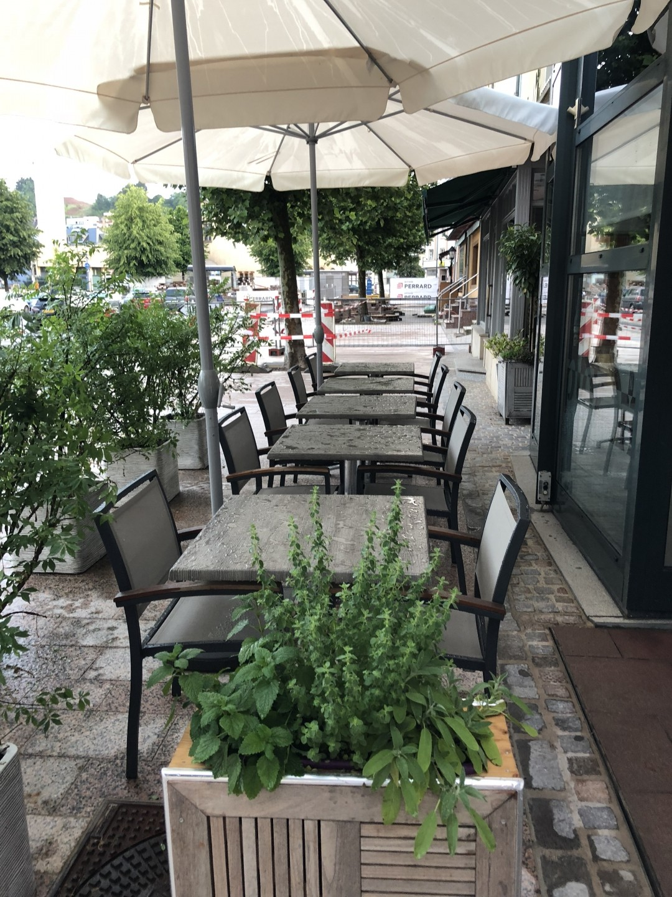
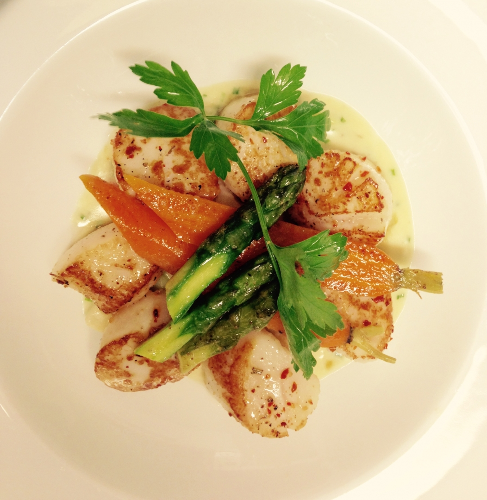
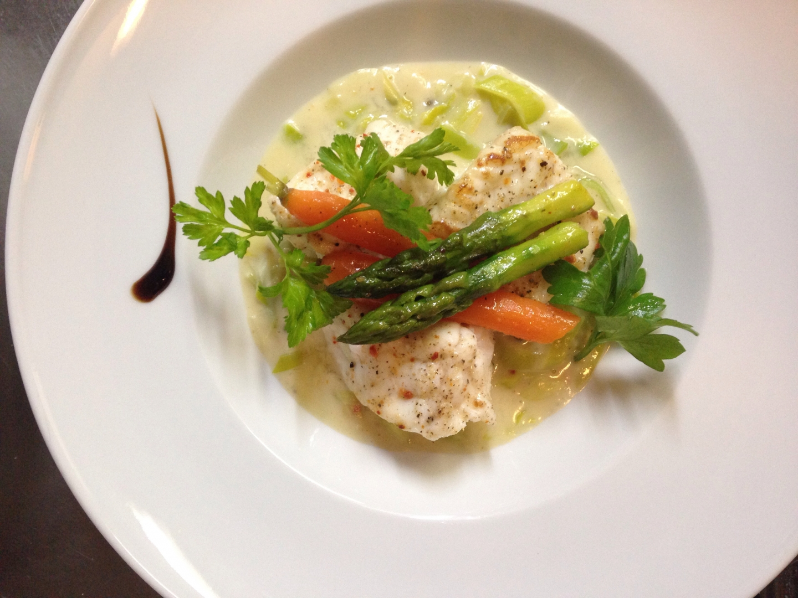
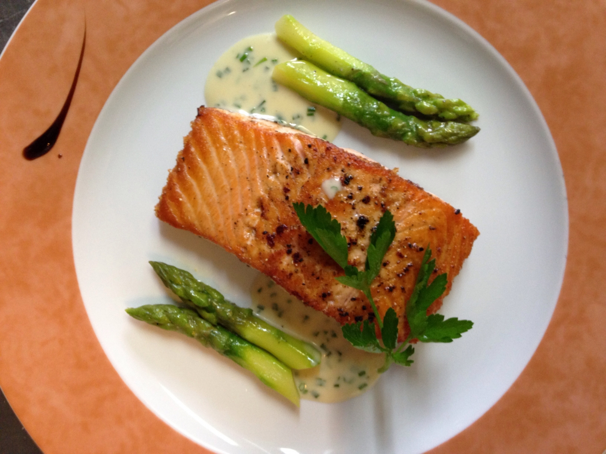
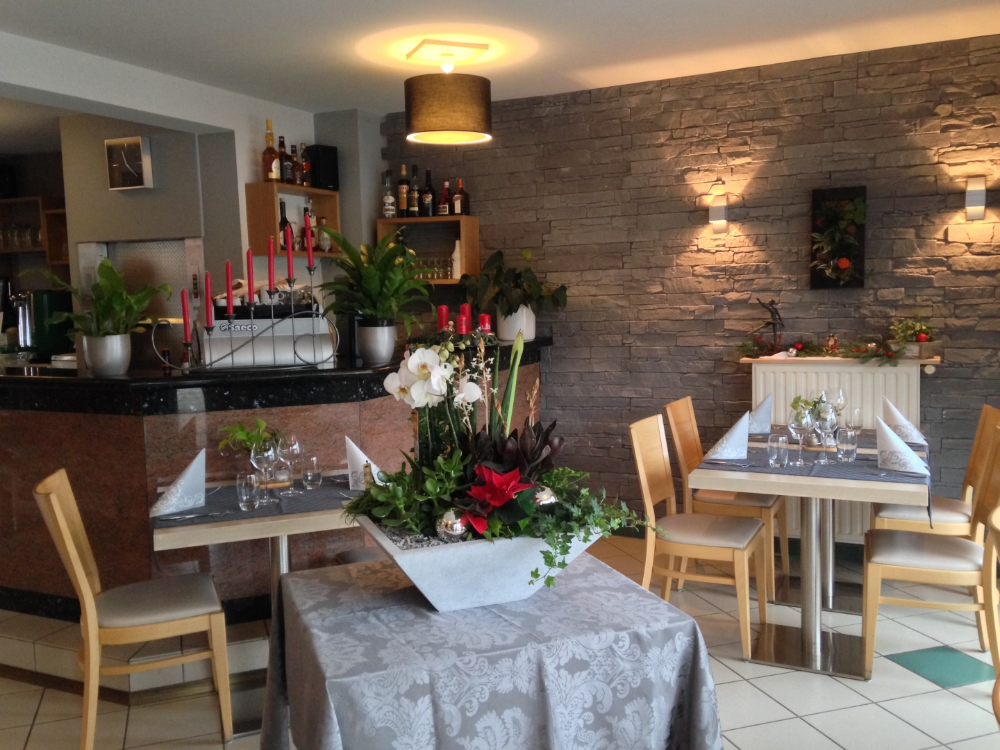

« Maartplaz », c'est la place du marché — et notre terrasse s'ouvre juste dessus. Une cuisine française et luxembourgeoise, fraîche, au rythme du marché, servie comme à la maison.
La carte tourne avec le marché et les saisons — asperges au printemps, canard en saison, poissons du jour. Voici les incontournables de la maison.




Mur de pierre, bois clair, quelques bougies rouges et des fleurs sur le comptoir : la salle de Maartplaz est celle d'une brasserie de quartier, tenue avec soin par sa patronne.
Ici on connaît les habitués, on dresse joliment l'assiette, et on cuisine ce que la place du marché a de meilleur ce jour-là. Le midi, le quartier s'y retrouve ; le soir, on prend son temps.
On vous accueille en plusieurs langues — comme il se doit sur une place de marché luxembourgeoise.
Ce qui revient dans presque chaque avis, sur la Place : un accueil chaleureux et des assiettes soignées.
Saint-Jacques bien fraîches, asperges parfaites et un service impeccable. Avis client
Le canard est absolument incroyable. Avis client
La terrasse donne sur la Place Marie-Adélaïde, en plein centre d'Ettelbruck. Stationnement gratuit à proximité le midi.
| Lundi | Fermé |
| Mardi | 11:30–14:00 · 18:30–21:00 |
| Mercredi | 11:30–14:00 · 18:30–21:00 |
| Jeudi | 11:30–14:00 · soir à confirmer |
| Vendredi | 11:30–14:00 · 18:30–21:00 |
| Samedi | 11:30–14:00 · 18:30–21:00 |
| Dimanche | 11:30–14:00 · soir à confirmer |
Nous confirmons par téléphone ou e-mail.